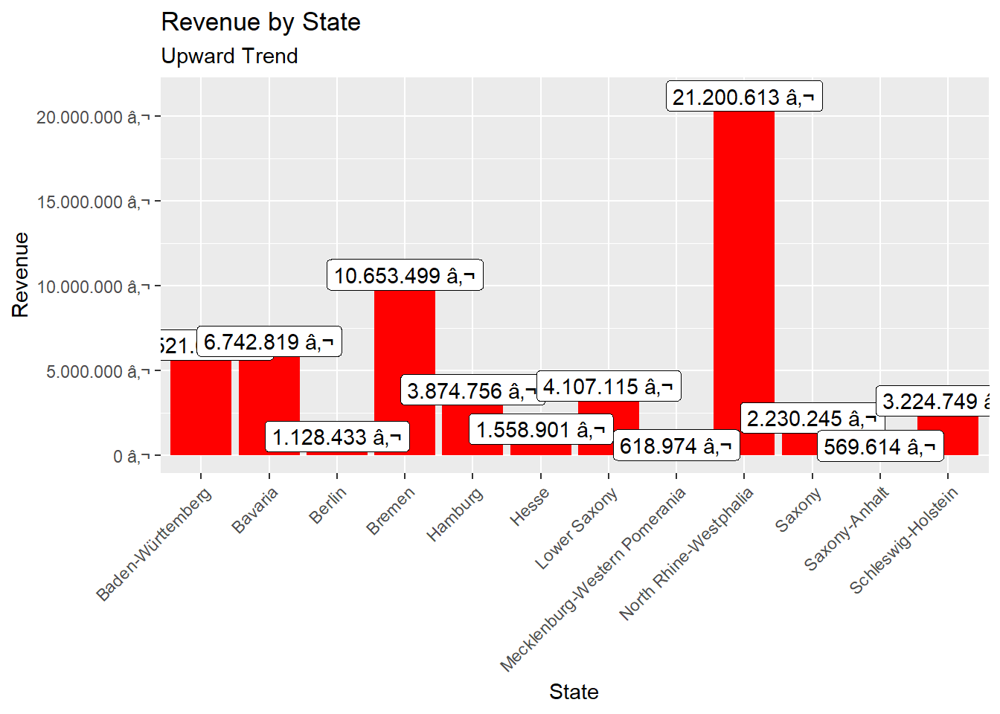
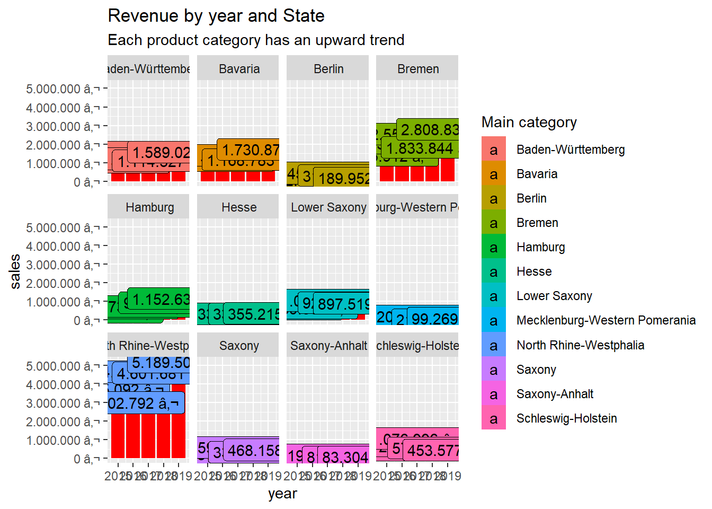
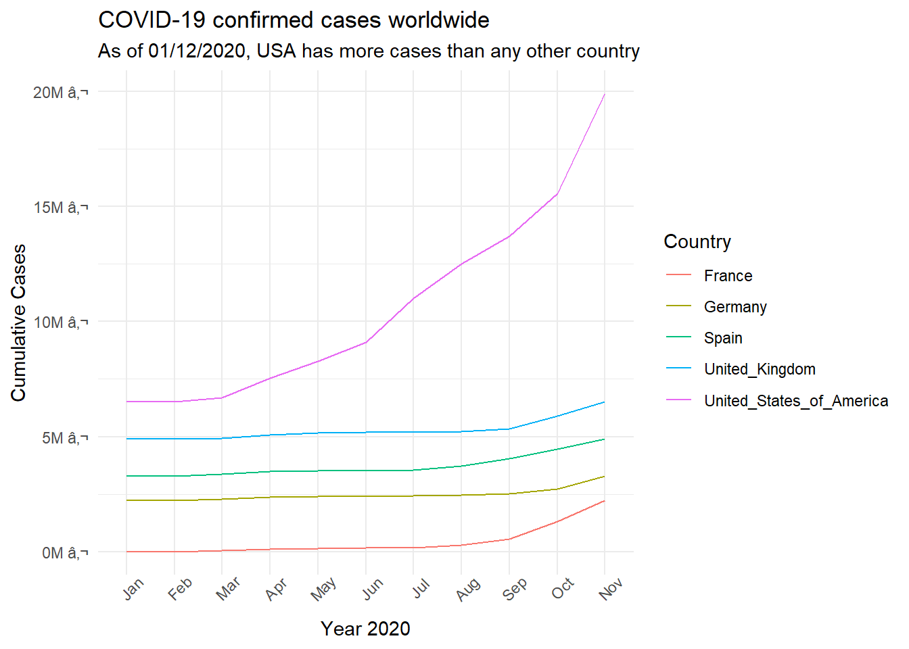
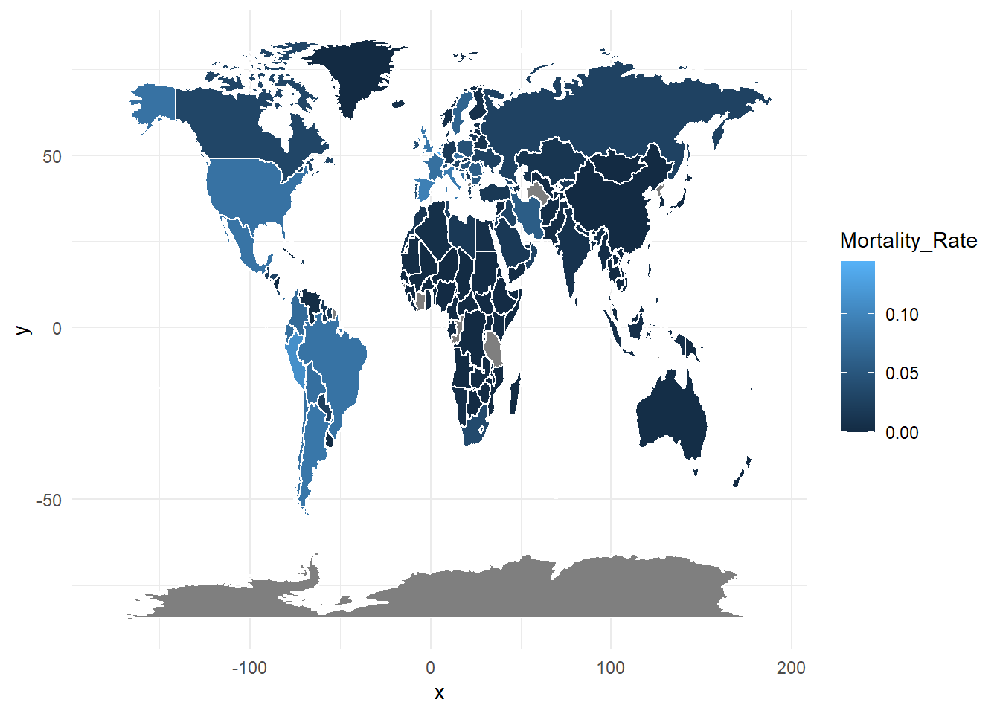

Analyze the sales by location (state) with a bar plot. Since state and city are multiple features (variables), they should be split. Which state has the highes revenue? Replace your bike_orderlines_wrangled_tbl object with the newly wrangled object (with the columns state and city).
Analyze the sales by location and year (facet_wrap). Because there are 12 states with bike stores, you should get 12 plots.
# 1.0 Load libraries ----
library(tidyverse)
library(readxl)
library(ggplot2)
# 2.0 Importing Files ----
bikes_tbl <- read_excel(path="G:/Data Science Project-R/DS_101/00_data/01_bike_sales/01_raw_data/bikes.xlsx")
orderlines_tbl <- read_excel("G:/Data Science Project-R/DS_101/00_data/01_bike_sales/01_raw_data/orderlines.xlsx")
bikeshops_tbl <- read_excel("G:/Data Science Project-R/DS_101/00_data/01_bike_sales/01_raw_data/bikeshops.xlsx")
# 3.0 Examining Data ----
# 4.0 Joining Data ----
left_join(orderlines_tbl, bikes_tbl,by = c("product.id" = "bike.id"))## # A tibble: 15,644 x 15
## ...1 order.id order.line order.date customer.id product.id quantity model model.year frame.material weight price category gender url
## <chr> <dbl> <dbl> <dttm> <dbl> <dbl> <dbl> <chr> <dbl> <chr> <dbl> <dbl> <chr> <chr> <chr>
## 1 1 1 1 2015-01-07 00:00:00 2 2681 1 Spectra~ 2021 carbon 13.8 3119 Mountain -~ female https://www.c~
## 2 2 1 2 2015-01-07 00:00:00 2 2411 1 Ultimat~ 2020 carbon 7.44 5359 Road - Rac~ unisex https://www.c~
## 3 3 2 1 2015-01-10 00:00:00 10 2629 1 Neuron ~ 2021 carbon 14.1 2729 Mountain -~ unisex https://www.c~
## 4 4 2 2 2015-01-10 00:00:00 10 2137 1 Speedma~ 2019 carbon 8.8 1749 Road - Tri~ unisex https://www.c~
## 5 5 3 1 2015-01-10 00:00:00 6 2367 1 Stitche~ 2020 aluminium 11.5 1219 Mountain -~ unisex https://www.c~
## 6 6 3 2 2015-01-10 00:00:00 6 1973 1 Roadlit~ 2020 carbon 8.8 1359 Hybrid / C~ unisex https://www.c~
## 7 7 3 3 2015-01-10 00:00:00 6 2422 1 Speedma~ 2020 carbon 8.2 2529 Road - Tri~ female https://www.c~
## 8 8 3 4 2015-01-10 00:00:00 6 2655 1 Inflite~ 2021 aluminium 8.85 1559 Road - Cyc~ unisex https://www.c~
## 9 9 3 5 2015-01-10 00:00:00 6 2247 1 Torque ~ 2020 carbon 14.4 3899 Mountain -~ unisex https://www.c~
## 10 10 4 1 2015-01-11 00:00:00 22 2408 1 Ultimat~ 2020 carbon 6.5 6629 Road - Rac~ unisex https://www.c~
## # ... with 15,634 more rowsbike_orderlines_joined_tbl <- orderlines_tbl %>%
left_join(bikes_tbl, by = c("product.id" = "bike.id")) %>%
left_join(bikeshops_tbl, by = c("customer.id" = "bikeshop.id"))
# 5.0 Wrangling Data ----
bike_orderlines_wrangled_tbl <- bike_orderlines_joined_tbl %>%
# 5.1 Separate category name
separate(col = location,
into = c("city", "state"),
sep = ",")%>%
mutate(total.price = price * quantity)%>%
select(-...1, -gender,-ends_with(".id"))%>%
rename(bikeshop = name) %>%
set_names(names(.) %>% str_replace_all("\\.", "_"))
# 6.0 Business Insights ----
# Step 1 - Manipulate
sales_by_state_tbl <- bike_orderlines_wrangled_tbl %>%
select(state,order_date, total_price) %>%
group_by(state) %>%
summarize(sales = sum(total_price)) %>%
mutate(sales_text = scales::dollar(sales, big.mark = ".",
decimal.mark = ",",
prefix = "",
suffix = " €"))
# Step 2 - Visualize
sales_by_state_tbl %>%
ggplot(aes(x = state, y = sales)) +
geom_col(fill = "red") + # Use geom_col for a bar plot
geom_label(aes(label = sales_text)) + # Adding labels to the bars
theme(axis.text.x = element_text(angle = 45, hjust = 1))+
scale_y_continuous(labels = scales::dollar_format(big.mark = ".",
decimal.mark = ",",
prefix = "",
suffix = " €")) +
labs(
title = "Revenue by State",
subtitle = "Upward Trend",
x = "State", # Override defaults for x and y
y = "Revenue"
)
# Step 1 - Manipulate
sales_by_state_tbl_1 <- bike_orderlines_wrangled_tbl %>%
select(state,order_date, total_price) %>%
mutate(year = year(order_date))%>%
group_by(year,state) %>%
summarize(sales = sum(total_price)) %>%
mutate(sales_text = scales::dollar(sales, big.mark = ".",
decimal.mark = ",",
prefix = "",
suffix = " €"))
# Step 2 - Visualize facet
sales_by_state_tbl_1 %>%
ggplot(aes(x =year , y = sales, fill = state)) +
geom_col(fill = "red")+
facet_wrap(~ state) +
geom_label(aes(label = sales_text)) + # Adding labels to the bars
scale_y_continuous(labels = scales::dollar_format(big.mark = ".",
decimal.mark = ",",
prefix = "",
suffix = " €")) +
labs(
title = "Revenue by year and State",
subtitle = "Each product category has an upward trend",
fill = "Main category" # Changes the legend name
)
Get some data via an API. There are millions of providers, that offer API access for free and have good documentation about how to query their service. You just have to google them. You can use whatever service you want. For example, you can get data about your listening history (spotify), get data about flights (skyscanner) or just check the weather forecast.
library(devtools)
library(spotifyr)
library(tidyverse)
library(knitr)
library(lubridate)
library(ggridges)
Sys.setenv(SPOTIFY_CLIENT_ID = '5964d300017d4643a56fedb1e42b561e')
Sys.setenv(SPOTIFY_CLIENT_SECRET = '307841367f1c4457baea58d6bf6584ff')
access_token <- get_spotify_access_token()
beatles <- get_artist_audio_features('the beatles')%>%
select(artist_name,artist_id, album_id,album_type, album_release_date, album_release_year, album_release_date_precision, danceability,artists ,track_uri,external_urls.spotify , album_name, key_name, mode_name ,key_mode)%>%
head(5)
beatles## artist_name artist_id album_id album_type
## 1 The Beatles 3WrFJ7ztbogyGnTHbHJFl2 1WMVvswNzB9i2UMh9svso5 album
## 2 The Beatles 3WrFJ7ztbogyGnTHbHJFl2 1WMVvswNzB9i2UMh9svso5 album
## 3 The Beatles 3WrFJ7ztbogyGnTHbHJFl2 1WMVvswNzB9i2UMh9svso5 album
## 4 The Beatles 3WrFJ7ztbogyGnTHbHJFl2 1WMVvswNzB9i2UMh9svso5 album
## 5 The Beatles 3WrFJ7ztbogyGnTHbHJFl2 1WMVvswNzB9i2UMh9svso5 album
## album_release_date album_release_year album_release_date_precision
## 1 2018-11-09 2018 day
## 2 2018-11-09 2018 day
## 3 2018-11-09 2018 day
## 4 2018-11-09 2018 day
## 5 2018-11-09 2018 day
## danceability
## 1 0.510
## 2 0.395
## 3 0.529
## 4 0.803
## 5 0.749
## artists
## 1 https://api.spotify.com/v1/artists/3WrFJ7ztbogyGnTHbHJFl2, 3WrFJ7ztbogyGnTHbHJFl2, The Beatles, artist, spotify:artist:3WrFJ7ztbogyGnTHbHJFl2, https://open.spotify.com/artist/3WrFJ7ztbogyGnTHbHJFl2
## 2 https://api.spotify.com/v1/artists/3WrFJ7ztbogyGnTHbHJFl2, 3WrFJ7ztbogyGnTHbHJFl2, The Beatles, artist, spotify:artist:3WrFJ7ztbogyGnTHbHJFl2, https://open.spotify.com/artist/3WrFJ7ztbogyGnTHbHJFl2
## 3 https://api.spotify.com/v1/artists/3WrFJ7ztbogyGnTHbHJFl2, 3WrFJ7ztbogyGnTHbHJFl2, The Beatles, artist, spotify:artist:3WrFJ7ztbogyGnTHbHJFl2, https://open.spotify.com/artist/3WrFJ7ztbogyGnTHbHJFl2
## 4 https://api.spotify.com/v1/artists/3WrFJ7ztbogyGnTHbHJFl2, 3WrFJ7ztbogyGnTHbHJFl2, The Beatles, artist, spotify:artist:3WrFJ7ztbogyGnTHbHJFl2, https://open.spotify.com/artist/3WrFJ7ztbogyGnTHbHJFl2
## 5 https://api.spotify.com/v1/artists/3WrFJ7ztbogyGnTHbHJFl2, 3WrFJ7ztbogyGnTHbHJFl2, The Beatles, artist, spotify:artist:3WrFJ7ztbogyGnTHbHJFl2, https://open.spotify.com/artist/3WrFJ7ztbogyGnTHbHJFl2
## track_uri
## 1 spotify:track:183Klch3PBWLz2S6zNUVxR
## 2 spotify:track:21pC0RPgkThjHlwpmCtxGb
## 3 spotify:track:0bYmYFbEAADKAlHdJqZ1gL
## 4 spotify:track:02FJNRUlB28e1F0R9uP2s1
## 5 spotify:track:76YBf6AwWhPG62H2LZftFQ
## external_urls.spotify album_name key_name
## 1 https://open.spotify.com/track/183Klch3PBWLz2S6zNUVxR The Beatles A
## 2 https://open.spotify.com/track/21pC0RPgkThjHlwpmCtxGb The Beatles D
## 3 https://open.spotify.com/track/0bYmYFbEAADKAlHdJqZ1gL The Beatles G
## 4 https://open.spotify.com/track/02FJNRUlB28e1F0R9uP2s1 The Beatles A#
## 5 https://open.spotify.com/track/76YBf6AwWhPG62H2LZftFQ The Beatles A
## mode_name key_mode
## 1 major A major
## 2 major D major
## 3 minor G minor
## 4 major A# major
## 5 minor A minorbeatles %>%
count(key_mode, sort = TRUE) %>%
head(10) %>%
as_tibble()## # A tibble: 5 x 2
## key_mode n
## <chr> <int>
## 1 A major 1
## 2 A minor 1
## 3 A# major 1
## 4 D major 1
## 5 G minor 1joy <- get_artist_audio_features('joy division')
joy %>%
arrange(-valence) %>%
select(track_name, valence) %>%
head(10) %>%
as_tibble()## # A tibble: 10 x 2
## track_name valence
## <chr> <dbl>
## 1 Passover - 2020 Digital Master 0.946
## 2 Colony - 2020 Digital Master 0.829
## 3 Atrocity Exhibition - 2020 Digital Master 0.79
## 4 Isolation - 2020 Digital Master 0.778
## 5 A Means to an End - 2020 Digital Master 0.774
## 6 Disorder - 2019 Digital Master 0.73
## 7 Interzone - 2019 Digital Master 0.727
## 8 Heart and Soul - 2020 Digital Master 0.692
## 9 Twenty Four Hours - 2020 Digital Master 0.658
## 10 She's Lost Control - 2019 Digital Master 0.617Scrape one of the competitor websites of canyon (either https://www.rosebikes.de/ or https://www.radon-bikes.de) and create a small database. The database should contain the model names and prices for at least one category. Use the selectorgadget to get a good understanding of the website structure.
library(tidyverse) # Main Package - Loads dplyr, purrr, etc.
library(rvest) # HTML Hacking & Web Scraping
library(xopen) # Quickly opening URLs
library(jsonlite) # converts JSON files to R objects
library(glue) # concatenate strings
library(stringi) # character string/text processing
library(rvest)
#Getting the Urls
url <- "https://www.radon-bikes.de/"
#xopen(url)
url_home <- read_html(url)
url_home## {html_document}
## <html lang="de" data-lang="0" class="no-js ">
## [1] <head>\n<meta http-equiv="Content-Type" content="text/html; charset=UTF-8">\n<meta charset="utf-8">\n<!-- \n\tRadon Bikes © 4c media . Werbeagentur Bayreut ...
## [2] <body id="page-1">\n<!-- Google Tag Manager (noscript) -->\n<noscript><iframe src="https://www.googletagmanager.com/ns.html?id=GTM-PL6RT4F" height="0" widt ...bike_family_tbl<- url_home %>%
html_nodes(css = ".js-dropdown > a")%>%
html_text()%>%
discard(.p = ~stringr::str_detect(.x,"DE|SERVICE|WEAR|LIFE")) %>%
unique()%>%
enframe(name = "position", value = "family_name")
bike_family_tbl## # A tibble: 4 x 2
## position family_name
## <int> <chr>
## 1 1 MOUNTAINBIKE
## 2 2 TREKKING & CROSS
## 3 3 E-BIKE
## 4 4 ROADBIKE# 1.2 COLLECT PRODUCT CATEGORIES ----
bike_category_tbl <- url_home %>%
html_nodes(css = ".megamenu__item> a") %>%
html_attr('href')%>%
enframe(name = "position", value = "subdirectory")%>%
mutate(
url = glue("https://www.radon-bikes.de{subdirectory}bikegrid")
)
bike_category_tbl## # A tibble: 10 x 3
## position subdirectory url
## <int> <chr> <glue>
## 1 1 /mountainbike/hardtail/ https://www.radon-bikes.de/mountainbike/hardtail/bikegrid
## 2 2 /mountainbike/fullsuspension/ https://www.radon-bikes.de/mountainbike/fullsuspension/bikegrid
## 3 3 /trekking-cross/trekking/ https://www.radon-bikes.de/trekking-cross/trekking/bikegrid
## 4 4 /trekking-cross/cross/ https://www.radon-bikes.de/trekking-cross/cross/bikegrid
## 5 5 /e-bike/mountainbike/ https://www.radon-bikes.de/e-bike/mountainbike/bikegrid
## 6 6 /e-bike/trekking/ https://www.radon-bikes.de/e-bike/trekking/bikegrid
## 7 7 /roadbike/carbon/ https://www.radon-bikes.de/roadbike/carbon/bikegrid
## 8 8 /roadbike/alu/ https://www.radon-bikes.de/roadbike/alu/bikegrid
## 9 9 /wear/radon-wear/ https://www.radon-bikes.de/wear/radon-wear/bikegrid
## 10 10 /wear/accessoires/ https://www.radon-bikes.de/wear/accessoires/bikegridbike_category_url <- bike_category_tbl$url[1]
#xopen(bike_category_url)
html_bike_category <- read_html(bike_category_url)
bike_url_tbl <- html_bike_category %>%
html_nodes(css = ".m-bikegrid__item > a") %>%
html_attr("href") %>%
enframe(name = "position", value = "category_url")%>%
mutate(
url = glue("https://www.radon-bikes.de{category_url}")
)
bike_url_tbl ## # A tibble: 33 x 3
## position category_url url
## <int> <chr> <glue>
## 1 1 /mountainbike/hardtail/jealous/jealous-80-2021/ https://www.radon-bikes.de/mountainbike/hardtail/jealous/jealous-80-2021/
## 2 2 /mountainbike/hardtail/jealous/jealous-90-2021/ https://www.radon-bikes.de/mountainbike/hardtail/jealous/jealous-90-2021/
## 3 3 /mountainbike/hardtail/jealous/jealous-100-2021/ https://www.radon-bikes.de/mountainbike/hardtail/jealous/jealous-100-2021/
## 4 4 /mountainbike/hardtail/jealous/jealous-100-ea-2021/ https://www.radon-bikes.de/mountainbike/hardtail/jealous/jealous-100-ea-2021/
## 5 5 /mountainbike/hardtail/jealous/jealous-100-2020/ https://www.radon-bikes.de/mountainbike/hardtail/jealous/jealous-100-2020/
## 6 6 /mountainbike/hardtail/jealous/jealous-100-ea-2020/ https://www.radon-bikes.de/mountainbike/hardtail/jealous/jealous-100-ea-2020/
## 7 7 /mountainbike/hardtail/jealous-frameset/jealous-superlite-1x-1~ https://www.radon-bikes.de/mountainbike/hardtail/jealous-frameset/jealous-superlite-1~
## 8 8 /mountainbike/hardtail/jealous-al/jealous-al-80-2021/ https://www.radon-bikes.de/mountainbike/hardtail/jealous-al/jealous-al-80-2021/
## 9 9 /mountainbike/hardtail/jealous-al/jealous-al-80-hd-2021/ https://www.radon-bikes.de/mountainbike/hardtail/jealous-al/jealous-al-80-hd-2021/
## 10 10 /mountainbike/hardtail/jealous-al/1x12/ https://www.radon-bikes.de/mountainbike/hardtail/jealous-al/1x12/
## # ... with 23 more rows# 2.1.2 Extract the descriptions
bike_price_tbl <- html_bike_category %>%
html_nodes('.m-bikegrid__price.currency_eur .m-bikegrid__price--active')%>%
html_text()%>%
enframe(name = "position", value = "price")
#bike_price_tbl
bike_title_tbl <- html_bike_category %>%
html_nodes('.m-bikegrid__info .a-heading--small')%>%
html_text()%>%
enframe(name = "position", value = "title")
#bike_title_tbl
bike_tbl1 <- merge(x = bike_title_tbl, y = bike_price_tbl, by = "position")
bike_tbl_merged <- merge(x = bike_tbl1, y = bike_url_tbl, by = "position")
bike_tbl_merged <- bike_tbl_merged %>%
select(-position,-category_url)
bike_tbl_merged## title price
## 1 \n JEALOUS 8.0\n 2599 \200
## 2 \n JEALOUS 9.0\n 2999 \200
## 3 \n JEALOUS 10.0\n 3999 \200
## 4 \n JEALOUS 10.0 EA\n 5299 \200
## 5 \n JEALOUS 10.0\n 3699 \200
## 6 \n JEALOUS 10.0 EA\n 3799\200
## 7 \n NEW JEALOUS SUPERLITE 1X\n 999 \200
## 8 \n JEALOUS AL 8.0\n 999 \200
## 9 \n JEALOUS AL 8.0 HD\n 1299 \200
## 10 \n JEALOUS AL 9.0\n 1499 \200
## 11 \n JEALOUS AL 10.0\n 1799 \200
## 12 \n JEALOUS AL 10.0 SL\n 1999 \200
## 13 \n CRAGGER 7.0\n 1199 \200
## 14 \n CRAGGER 8.0\n 1799 \200
## 15 \n CRAGGER 8.0\n 1649 \200
## 16 \n ZR TEAM 7.0\n 799 \200
## 17 \n ZR TEAM 7.0\n 799 \200
## 18 \n ZR TEAM 8.0\n 899 \200
## 19 \n ZR TEAM 8.0\n 899 \200
## 20 \n ZR TEAM 6.0\n 699\200
## 21 \n ZR TEAM 6.0\n 699\200
## 22 \n ZR TEAM 7.0\n 699\200
## 23 \n ZR TEAM 7.0\n 699\200
## 24 \n ZR TEAM 8.0\n 849\200
## 25 \n ZR TEAM 8.0\n 999\200
## 26 \n ZR TEAM NX1\n 799\200
## 27 \n ZR TEAM NX1\n 799\200
## 28 \n ZR LADY 7.0\n 799 \200
## 29 \n ZR LADY 8.0\n 899 \200
## 30 \n ZR LADY 6.0\n 699 \200
## 31 \n ZR LADY 7.0\n 649 \200
## 32 \n ZR LADY 8.0\n 849 \200
## 33 \n SLUSH Frameset\n 299 \200
## url
## 1 https://www.radon-bikes.de/mountainbike/hardtail/jealous/jealous-80-2021/
## 2 https://www.radon-bikes.de/mountainbike/hardtail/jealous/jealous-90-2021/
## 3 https://www.radon-bikes.de/mountainbike/hardtail/jealous/jealous-100-2021/
## 4 https://www.radon-bikes.de/mountainbike/hardtail/jealous/jealous-100-ea-2021/
## 5 https://www.radon-bikes.de/mountainbike/hardtail/jealous/jealous-100-2020/
## 6 https://www.radon-bikes.de/mountainbike/hardtail/jealous/jealous-100-ea-2020/
## 7 https://www.radon-bikes.de/mountainbike/hardtail/jealous-frameset/jealous-superlite-1x-100/
## 8 https://www.radon-bikes.de/mountainbike/hardtail/jealous-al/jealous-al-80-2021/
## 9 https://www.radon-bikes.de/mountainbike/hardtail/jealous-al/jealous-al-80-hd-2021/
## 10 https://www.radon-bikes.de/mountainbike/hardtail/jealous-al/1x12/
## 11 https://www.radon-bikes.de/mountainbike/hardtail/jealous-al/jealous-al-100-2021/
## 12 https://www.radon-bikes.de/mountainbike/hardtail/jealous-al/jealous-al-100-sl/
## 13 https://www.radon-bikes.de/mountainbike/hardtail/cragger/cragger-70-2021/
## 14 https://www.radon-bikes.de/mountainbike/hardtail/cragger/cragger-80-2021/
## 15 https://www.radon-bikes.de/mountainbike/hardtail/cragger/cragger-80-2020/
## 16 https://www.radon-bikes.de/mountainbike/hardtail/zr-team/zr-team-275-70-2021/
## 17 https://www.radon-bikes.de/mountainbike/hardtail/zr-team/zr-team-29-70-2021/
## 18 https://www.radon-bikes.de/mountainbike/hardtail/zr-team/zr-team-275-80-2021/
## 19 https://www.radon-bikes.de/mountainbike/hardtail/zr-team/zr-team-29-80-2021/
## 20 https://www.radon-bikes.de/mountainbike/hardtail/zr-team/zr-team-275-60-2020/
## 21 https://www.radon-bikes.de/mountainbike/hardtail/zr-team/zr-team-29-60-2020/
## 22 https://www.radon-bikes.de/mountainbike/hardtail/zr-team/zr-team-275-70-2020/
## 23 https://www.radon-bikes.de/mountainbike/hardtail/zr-team/zr-team-29-70-2020/
## 24 https://www.radon-bikes.de/mountainbike/hardtail/zr-team/zr-team-275-80-2020/
## 25 https://www.radon-bikes.de/mountainbike/hardtail/zr-team/zr-team-29-80-2020/
## 26 https://www.radon-bikes.de/mountainbike/hardtail/zr-team/zr-team-275-nx1-2020/
## 27 https://www.radon-bikes.de/mountainbike/hardtail/zr-team/zr-team-29-nx1-2020/
## 28 https://www.radon-bikes.de/mountainbike/hardtail/zr-lady/zr-lady-70-2021/
## 29 https://www.radon-bikes.de/mountainbike/hardtail/zr-lady/zr-lady-80-2021/
## 30 https://www.radon-bikes.de/mountainbike/hardtail/zr-lady/zr-lady-60-2020/
## 31 https://www.radon-bikes.de/mountainbike/hardtail/zr-lady/zr-lady-70-2020/
## 32 https://www.radon-bikes.de/mountainbike/hardtail/zr-lady/zr-lady-80-2020/
## 33 https://www.radon-bikes.de/mountainbike/hardtail/slush/slush-frameset-2020/library(tidyverse)
library(vroom)
library(magrittr)
library(lubridate)
library(data.table)
patent <- “G:/Data Science Project-R/DS_101/02_data_wrangling/patent.tsv”
patent_tbl <- fread(patent)
setnames(patent_tbl, “id”, “patent_id”)
patent_tbl_view <- patent_tbl[1:2]
assignee <- “G:/Data Science Project-R/DS_101/02_data_wrangling/assignee.tsv”
assignee_tbl <- fread(assignee)
setnames(assignee_tbl, “id”, “assignee_id”)
patent_assignee <- “G:/Data Science Project-R/DS_101/02_data_wrangling/patent_assignee.tsv”
patent_assignee_tbl<- fread(patent_assignee)
uspc <- “G:/Data Science Project-R/DS_101/02_data_wrangling/uspc.tsv”
uspc_tbl<- fread(uspc)
setnames(uspc_tbl, “uuid”, “assignee_id”)
Patent Dominance: What US company / corporation has the most patents? List the 10 US companies with the most assigned/granted patents.
combined_data_assignee <- merge(assignee_tbl, patent_assignee_tbl, by=‘assignee_id’)
na.omit(combined_data_assignee, cols=“organization”)
combined_data_assignee [, .N, by = organization][order(-N)] %>% head(1)%>%na.omit()
——->
organization N
1: International Business Machines Corporation 139091
combined_data_assignee [, .N, by = organization][order(-N)]%>%na.omit() %>% head(11)
——->
organization N
1: International Business Machines Corporation 139091
2: Samsung Electronics Co., Ltd. 93561
3: Canon Kabushiki Kaisha 75909
4: Sony Corporation 54342
5: Kabushiki Kaisha Toshiba 49442
6: General Electric Company 47121
7: Hitachi, Ltd. 45374
8: Intel Corporation 42156
9: Fujitsu Limited 37196
10: Hewlett-Packard Development Company, L.P. 35572
Recent patent acitivity: What US company had the most patents granted in 2019? List the top 10 companies with the most new granted patents for 2019.
combined_data_patent <- merge(combined_data_assignee,patent_tbl , by=‘patent_id’)
reshaped_patent_tbl <- combined_data_patent[,.(patent_id, country, date, organization,kind)]
#What US company had the most patents granted in 2019?
reshaped_patent_tbl [lubridate::year(date) == 2019, .N, by = organization][order(-N)]%>%na.omit() %>% head(1)
——->
organization N
1: International Business Machines Corporation 9265
#List the top 10 companies with the most new granted patents for 2019.
reshaped_patent_tbl [lubridate::year(date) == 2019 & kind==“B1”, .N, by = organization][order(-N)]%>%na.omit() %>% head(10)
——->
organization N
1: Amazon Technologies, Inc. 1766
2: EMC IP Holding Company LLC 719
3: Google Inc. 550
4: International Business Machines Corporation 515
5: Capital One Services, LLC 386
6: Apple Inc. 299
7: 276
8: STATE FARM MUTUAL AUTOMOBILE INSURANCE COMPANY 242
9: Facebook, Inc. 239
10: Pioneer Hi-Bred International, Inc. 233
Innovation in Tech: What is the most innovative tech sector? For the top 10 companies (worldwide) with the most patents, what are the top 5 USPTO tech main classes?
combined_data_uspc <- merge(combined_data_assignee,uspc_tbl , by=‘patent_id’)
reshaped_uspc_tbl <- combined_data_uspc[,.(patent_id, type, organization,mainclass_id,subclass_id)]
#What is the most innovative tech sector?
patent_tbl[, .N, by = type][order(-N)] %>% head(1)
——->
type N
1: utility 6735315
#What are the top 5 USPTO main classes of their patents?
reshaped_uspc_tbl[organization==“International Business Machines Corporation”, .N, by = mainclass_id][order(-N)]%>% head(5)
——->
mainclass_id N
1: 257 21754
2: 709 16834
3: 438 16596
4: 707 16147
5: 711 12829
Map the time course of the cumulative Covid-19 cases!
library(tidyverse)
library(ggthemes)
covid_data_tbl <- read_csv("https://opendata.ecdc.europa.eu/covid19/casedistribution/csv")
covid_data_tbl <- covid_data_tbl %>%
rename(cumulative_cases = `Cumulative_number_for_14_days_of_COVID-19_cases_per_100000`, continent=continentExp, country=countriesAndTerritories)
covid_data_tbl_reshaped <- covid_data_tbl %>%
select(month,country ,continent, cases, deaths, year) %>%
filter((country == "United_States_of_America" |
country == "Germany" |
country == "United_Kingdom" |
country == "France" |
country == "Spain") & year == "2020")%>%
# Group by category and summarize
group_by(country, month, year) %>%
summarise(total_case = sum(cases)) %>%
ungroup()%>%
mutate(month=lubridate::month(month,label = TRUE,abbr = TRUE))
cumulative_case_tbl <- covid_data_tbl_reshaped %>% mutate(cum_sum=cumsum(total_case))
cumulative_case_tbl %>%
ggplot(aes(month, cum_sum, group=country, color = country)) +
geom_line(size=.5) +
scale_y_continuous(labels = scales::dollar_format(scale = 1/1e6,
prefix = "",
suffix = "M €"))+
labs(
title = "COVID-19 confirmed cases worldwide",
subtitle = "As of 01/12/2020, USA has more cases than any other country",
x = "Year 2020",
y = "Cumulative Cases",
color = "Country"
)+
theme_minimal() +
theme(legend.position = "right",
legend.direction = "vertical",
axis.text.x = element_text(angle = 45))
Visualize the distribution of the mortality rate (deaths / population) with geom_map().
library(tidyverse)
library(ggthemes)
covid_data_tbl <- read_csv("https://opendata.ecdc.europa.eu/covid19/casedistribution/csv")
covid_data_tbl <- covid_data_tbl %>%
rename(cumulative_cases = `Cumulative_number_for_14_days_of_COVID-19_cases_per_100000`, continent=continentExp, country=countriesAndTerritories)
##### challenge 2
world <- map_data("world")
covid_data_tbl_reshaped <- covid_data_tbl%>%
filter(year==2020)
covid_data_tbl_reshaped <- covid_data_tbl_reshaped %>%
mutate(country = case_when(
country == "United_Kingdom" ~ "UK",
country == "United_States_of_America" ~ "USA",
country == "Czechia" ~ "Czech Republic",
country == "Bonaire, Saint Eustatius and Saba" ~ "Bonaire",
TRUE ~ country
))
covid_data_tbl_reshaped <- covid_data_tbl_reshaped %>%
group_by(country)%>%
summarise(total_death = sum(deaths),population = mean(popData2019))
covid_data_tbl_reshaped <- covid_data_tbl_reshaped %>%
mutate(country_new = str_replace_all(country, "_", " ") , Mortality_Rate = (total_death / population) * 100)
world <- dplyr::left_join(world, covid_data_tbl_reshaped , by=c("region" = "country_new"))
world %>%
ggplot(aes(map_id = region)) +
geom_map(aes(fill = Mortality_Rate), map = world, color = "white") +
expand_limits(x = world$long, y = world$lat)+
theme_minimal() 